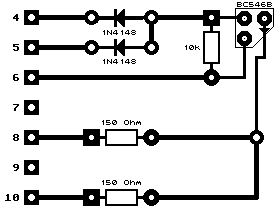

Previous
Next
TOC
J1
=
Romportbuchse
J2
= ACSI-DMA
Anschlufl fÅE externe Ger‰te
J3
= Anschlufl fÅE Floppy A und B (
externe Laufwerke)
J4
=
Modem 1 (MFP-Chip)
J5
= Centronics
buchse
J6
=
Monitorbuchse
J7
= Midi
Out Buchse
J8
=
Midi In Buchse
J9
= Netzteil
anschlufl
J10
=
Joystickbuchse
J11
=
Maus/Joystickbuchse
J12
=
Tastaturanschlufl
SW1
= Ein/Aus Schalter
SW2
= Resettaster
A16/A17/CE/U64=
Epromtyp festlegen, der eingesetzt ist
(nicht ver‰ndern)!
Achtung: Nur in neueren Ger‰ten vorhanden!
Die /SYNC-Signal erzeugung im 520ST+

Kapitel 260ST/520ST/520ST+/520STM/520STF/520STFM Computer, Seite 2